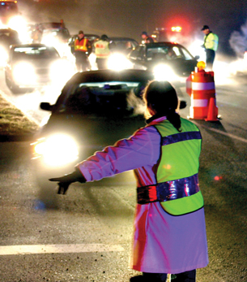
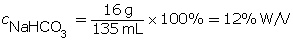
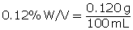

Module 4—Properties of Solutions
 Read
Read
Percentage Weight per Volume (% W/V)

© Larry St. Pierre/Shutterstock
A percentage weight per volume (% W/V) concentration expresses the mass of solute as a percentage of total solution volume. Breathalyzers use % W/V percentages to indicate the alcohol content in blood. If a breathalyzer gives a reading of 0.05% W/V, it means 0.05 g of alcohol is present for every 100 mL of blood.
To learn more about this calculation, read from the last paragraph on page 203 to “COMMUNICATION example 2” on page 204 in your textbook.
After you have completed this reading, answer the Self-Check questions below.
 Self-Check
Self-Check
SC 6. A student dissolved 16 g of sodium bicarbonate in water to make a 135-mL solution. Determine the % W/V concentration of the resulting solution.
SC 7. In making a 860-mL solution, 71 g of copper(II) sulfate was dissolved in water. Determine the % W/V concentration of copper(II) in the solution.
SC 8. Suppose 0.020 kg of sodium bicarbonate is dissolved in water to make an 810-mL solution. Determine the % W/V concentration of the resulting solution.
SC 9. A solution contains 9.3% W/V ethanol. Express this in units of g/100 mL.
SC 10. A breathalyzer gives a reading of 0.120% W/V. Determine the mass (in mg) of alcohol present in 100 mL of blood.
Self-Check Answers
SC 6.

SC 7.

SC 8.

SC 9.

SC 10.


There is 120 mg present in 100 mL of blood.